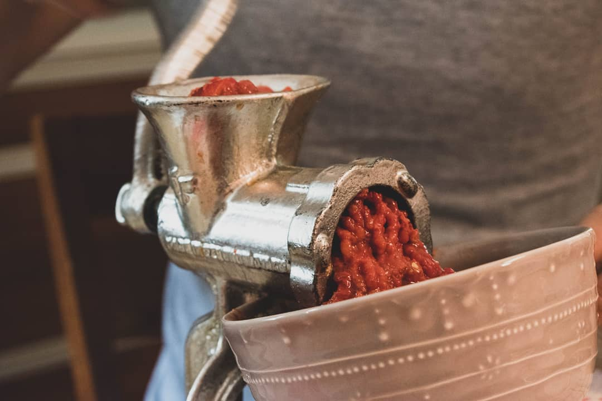

Zeleninová nátierka — Normy Jedál
Nezľaknite sa, nemleli sme žiadne mäso, ale vyrábali sme domáci Ajvar z pečenej kápie, baklažánu a paradajok. Na prvýkrát to bola makačka, najmä ošúpať toľko pečenej kápie. Ale je to fakt veľká dobrota 😋😊 #ajvar #pecenapaprika #pecenakapia #kápia #baklazan #natierka #domacanatierka #veganskanatierka #zelenina #zeleninovanatierka #priloha #dochucovadlo #zdravastrava #mnam #mňam #varimezdravoachutne #zdravoachutne #varimezdravo #varimeslaskou #peciemezdravo #nitra #recepty #panibaklazani